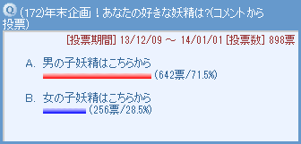

大変遅くなりすみません。毎年恒例の妖精人気投票２０１３年版の結果を、今更ながら記事としてまとめました。はたして昨年の結果はどうだったかのか！？

昨年も皆さんからたくさんの投票をありがとうございました。投票の結果・・・上位３人は下の絵になります！［コメント一覧］
イチロー＆カメリ＆ムーン(1)
なんとなんと、脇役中の脇役（失礼）であるムーンがついに１位をゲットしました！！ この意外ともいえる結果は、ムーンブームが巻き起こったムルモ屋本舗ならではの結果ともいえますね。２０１４年もこの人気を維持することができるのか！？
２位、３位もまた大波乱の結果となりました。脇役キャラにも主役と同じくらいの個性があるミルモでポン！の特徴が表れていますよね。
そして今年も上位３妖精を描きました。アニメでまったく接点のない３妖精なので、絵の構図でものすごく悩みました(笑)。結局絡み無しでただ配置しただけの絵になってしまいましたが、この絵から新たな展開を皆さんにて妄想していただけたら幸いです（妄想できるのか？？
最後に、全順位を紹介します。皆さんのお気に入りの妖精は何位にランクインしましたでしょうか？
| 今回 | 票数 | 名前 | 2012年 | 2011年 | 2010年 | 2009年 | 2008年 | |
|---|---|---|---|---|---|---|---|---|
| １位 | 188票 | ムーン | ▲ | ２位 | ２位 | ３２位 | ２４位 | |
| ２位 | 177票 | カメリ | ▲ | １９位 | ２４位 | １７位 | ||
| ３位 | 174票 | イチロー | ▲ | ４位 | １３位 | ３２位 | ||
| ４位 | 137票 | ウィン | ▲ | １２位 | １５位 | １１位 | ||
| ５位 | 35票 | ヤシチ | ▼ | ３位 | ３位 | ５位 | ７位 | ８位 |
| ６位 | 25票 | ネズミ | ▼ | ５位 | ８位 | ２位 | １位 | １位 |
| ７位 | 22票 | ヤマネ | ▲ | ８位 | １２位 | ３位 | ５位 | ３位 |
| ８位 | 17票 | ムルモ | ▲ | １０位 | ５位 | ７位 | ７位 | ４位 |
| ９位 | 13票 | ワカバ | ▼ | ８位 | ６位 | ８位 | ２４位 | ２０位 |
| １０位 | 12票 | パピィ | ▼ | １位 | １位 | １位 | ２位 | ２位 |
| １１位 | 9票 | ミルモ | ▲ | １２位 | ７位 | ４位 | ９位 | ５位 |
| アロマ | ▲ | １４位 | １７位 | １８位 | １５位 | ６位 | ||
| １３位 | 6票 | ハンゾー | ▼ | ６位 | ９位 | １２位 | ３位 | ８位 |
| リルム | ▼ | ７位 | ４位 | ２１位 | ３位 | １２位 | ||
| １５位 | 4票 | アクア | ▼ | １４位 | ２３位 | ３０位 | ２４位 | ２０位 |
| １６位 | 3票 | アクミ | ▲ | １８位 | １６位 | １７位 | ５位 | ７位 |
| フィア | ▲ | １８位 | １７位 | ３２位 | ２４位 | |||
| ドンタ | ▲ | ２１位 | ２３位 | ３２位 | ||||
| １９位 | 2票 | ピクモ | ▲ | ２１位 | ２６位 | ３２位 | ２１位 | ２０位 |
| サスケ | ▲ | ２４位 | １０位 | ９位 | ９位 | １２位 | ||
| チーエ | ▲ | ２６位 | ||||||
| ピカリ | ▲ | ２３位 | ２８位 | |||||
| ２３位 | 1票 | クモモ | ▼ | １１位 | ２６位 | |||
| アンリ | ▼ | １４位 | ２１位 | １５位 | １４位 | ８位 | ||
| マンボ | ▼ | １８位 | ２６位 | ２４位 | １５位 | ２０位 | ||
| センリ | ２３位 | ２０位 | ６位 | １７位 | １２位 | |||
| ゴロー | ▲ | ２４位 | ２１位 | ２８位 | ||||
| コロロ | ▲ | |||||||
| シャンボ | ▲ |
２０１４年の年末にも再び人気投票を行う予定です。投票システムを一新して行う予定ですが、果たして間に合うのか？？(^◇^;) それでは年末、再びよろしくお願いします！！
(2014/8/19)